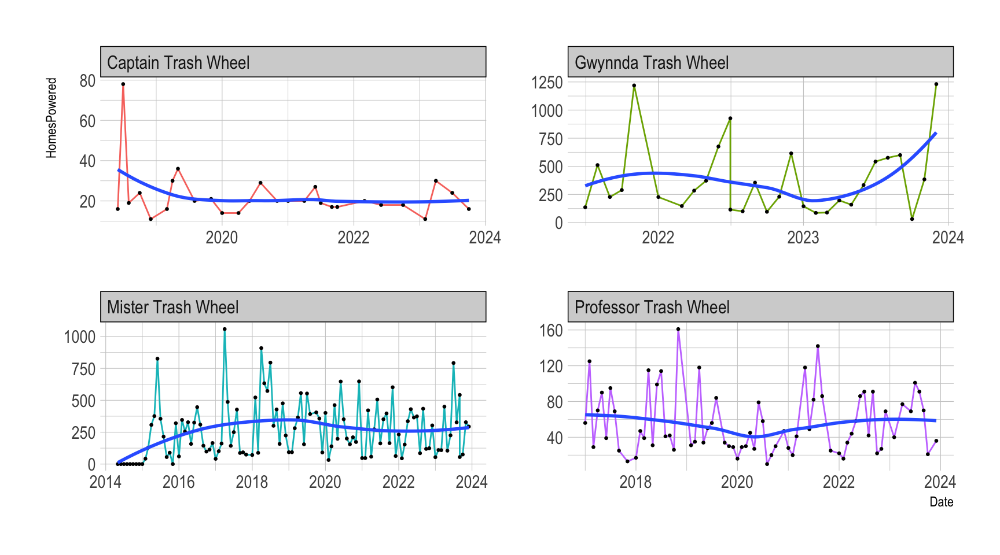
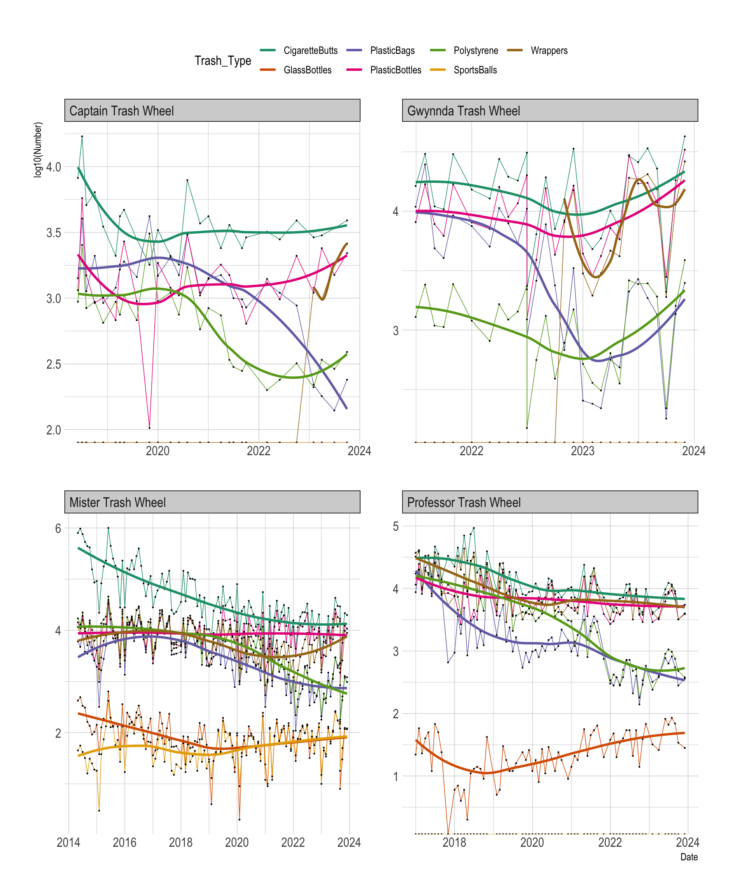
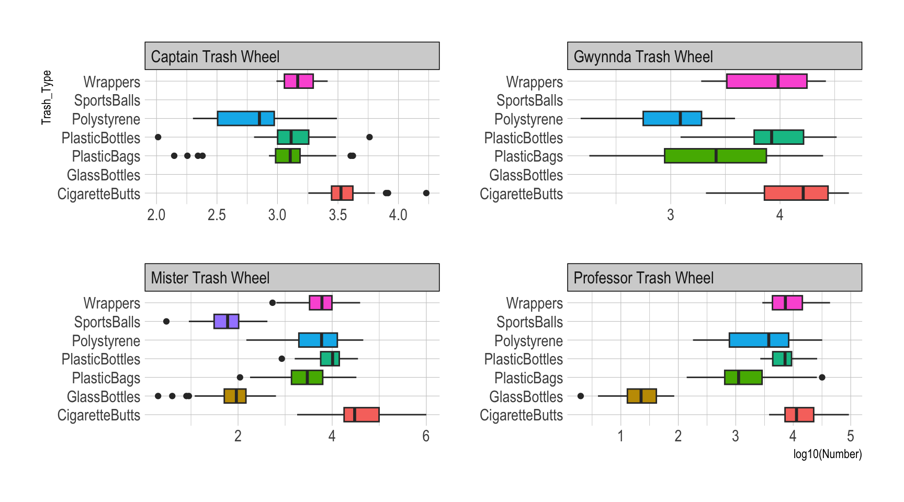
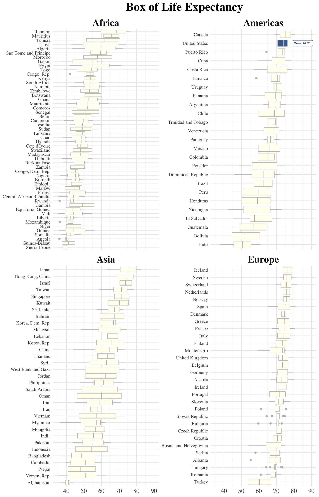
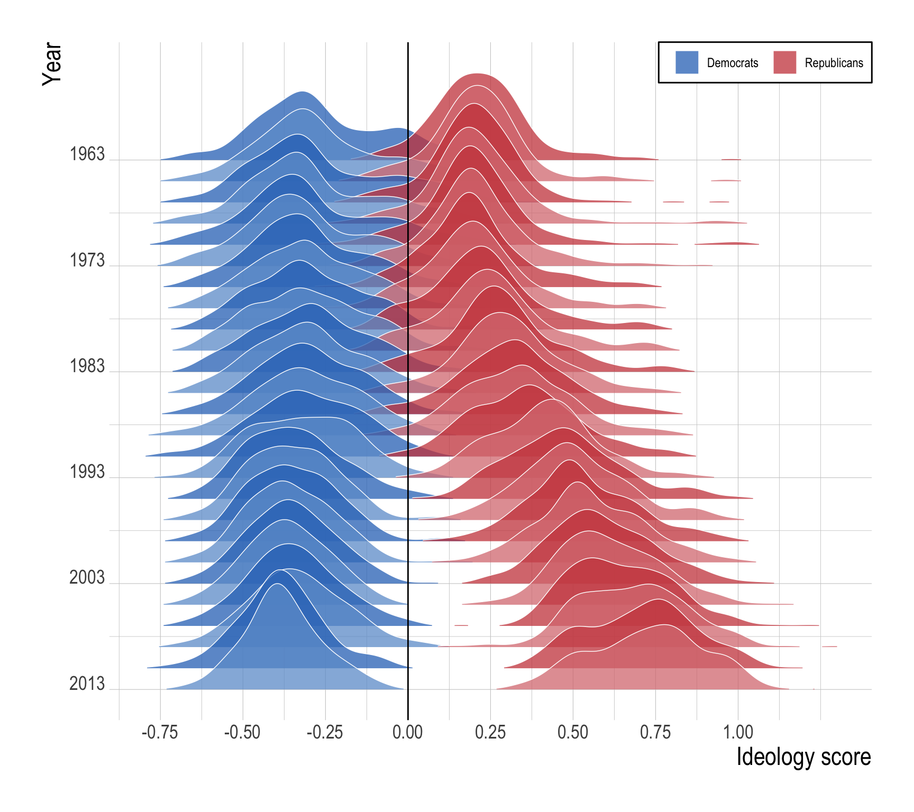
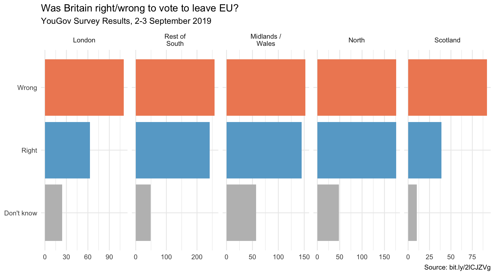
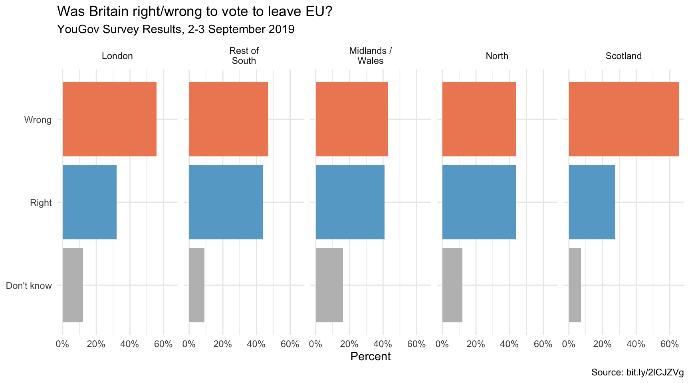
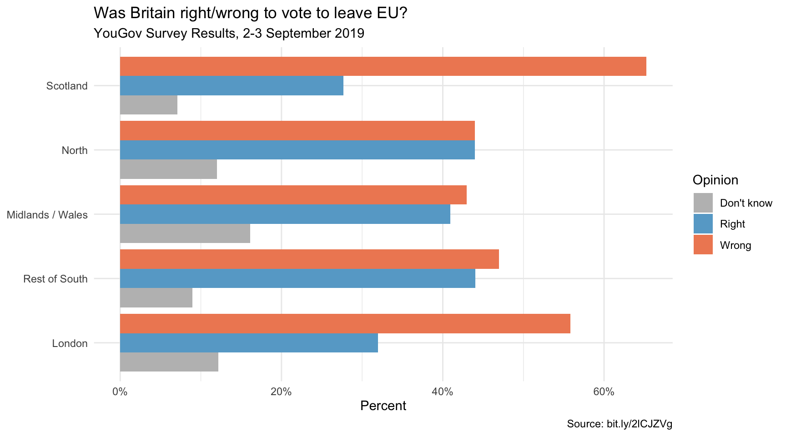

library(knitr)
library(tidyverse)
library(lubridate)
library(socviz)
library(ggthemes)
library(ggrepel)
library(ggtext)
library(hrbrthemes)
library(gapminder)
library(ggridges)DANL 399: Data Visualization and Presentation
Midterm Exam
Loading R packages
# Honor Pledges
I solemnly swear that I will not cheat or engage in any form of academic dishonesty during this exam.
I will not communicate with other students or use unauthorized materials.
I will uphold the integrity of this exam and demonstrate my own knowledge and abilities.
By taking this pledge, I acknowledge that academic dishonesty undermines the academic process and is a violation of the trust placed in me as a student.
I accept the consequences of any violation of this promise.
- Student’s Name:
- Student’s ID:
- Student’s Signature:
Load R packages
- Here we are loading all the R packages we need for the Midterm Exam, so that you do not need to load the R packages in your code.
library(tidyverse)
library(skimr)Question 1
The following describes the context of the data.frame, trashwheel.
Using The Power of Nature to Clean the Oceans

Mr. Trash Wheel is a semi-autonomous trash interceptor that is placed at the end of a river, stream or other outfall.
Far too lazy to chase trash around the ocean, Mr. Trash Wheel stays put and waits for the waste to flow to him.
Sustainably powered and built to withstand the biggest storms, Mr. Trash Wheel uses a unique blend of solar and hydro power to pull hundreds of tons of trash out of the water each year.
Meet the Mr. Trash Wheel Family

- Installed: May 9, 2014
- Location: Jones Falls stream, Inner Harbor, Baltimore, MD

- Installed: December 4, 2016
- Location: Harris Creek, Canton neighborhood, Baltimore, MD

- Installed: June 5, 2018
- Location: Masonville Cove, Baltimore, MD

- Installed: June 3, 2021
- Location: Gwynns Falls, West Baltimore, MD
Part 1
- The following is the data frames for Part 1 in Question 1.
trashwheel <- read_csv('https://bcdanl.github.io/data/trashwheel.csv')Variable Description
| variable | type | description |
|---|---|---|
Name |
character | Name of the Trash Wheel |
Month |
character | Month |
Year |
numeric | Year |
Date |
character | Date (Monthly) |
Weight |
numeric | Weight in tons |
Volume |
numeric | Volume in cubic yards |
PlasticBottles |
numeric | Number of plastic bottles |
Polystyrene |
numeric | Number of polystyrene items |
CigaretteButts |
numeric | Number of cigarette butts |
GlassBottles |
numeric | Number of glass bottles |
PlasticBags |
numeric | Number of plastic bags |
Wrappers |
numeric | Number of wrappers |
SportsBalls |
numeric | Number of sports balls |
HomesPowered |
numeric | Homes Powered - Each ton of trash equates to on average 500 kilowatts of electricity. An average household will use 30 kilowatts per day. |
Q1a
- Provide an R code to calculate mean and standard deviation of
Volumefor “Mister Trash Wheel”.
Answer :
Q1b
- Provide a ggplot code to replicate the following ggplot figure that describes how the distribution of
Weightvaries byName.- The number of bins in each subplot below is 15.
ggplot(trashwheel, aes(x = Weight, fill = Name)) +
geom_histogram(bins = 15,
show.legend = F) +
facet_wrap(Name ~ .)
Answer :
Q1c
- Provide a comment to describe how the distribution of
Weightvaries byName, as visualized in Q1b.
Answer :
Q1d
- Provide a ggplot code to replicate the following ggplot figure that describes how the daily trend of
HomesPoweredvaries byName.- The number of bins in each subplot below is 75.
ggplot(trashwheel, aes(x = Date, y = HomesPowered)) +
geom_line(aes(color = Name),
show.legend = F) +
geom_point(size = .5) +
geom_smooth(se = F) +
facet_wrap(Name ~ ., scales = "free") 
Answer :
Q1e
- Provide a comment to describe how the daily trend of
HomesPoweredvaries byName, as visualized in Q1d.
Answer :
Part II
For Part II, use the following data.frame, trashwheel_long.
trashwheel_long <- trashwheel |>
ungroup() |>
select(Name, Date, PlasticBottles:SportsBalls) |>
pivot_longer(cols = PlasticBottles:SportsBalls,
values_to = "Number",
names_to = "Trash_Type") |>
arrange(Trash_Type, Date)Variable Description
| variable | type | description |
|---|---|---|
Name |
character | Name of the Trash Wheel |
Date |
character | Date (Monthly) |
Trash_Type |
numeric | Type of Trashes |
Number |
numeric | Number of trash items |
Q1f
- Provide a ggplot code to replicate the following ggplot figure that describes how the daily trend of
log10(Number)varies byTrash_TypeandName.
ggplot(data = trashwheel_long, aes(x = Date, y = log10(Number))) +
geom_line(aes(color = Trash_Type),
linewidth = .25) +
geom_point(size = .1) +
geom_smooth(aes(color = Trash_Type),
se = F) +
facet_wrap(Name ~ ., scales = "free") +
scale_color_brewer(palette = 'Dark2') +
theme(legend.position = "top")
Answer :
Q1g
- Provide a comment to describes how the daily trend of
log10(Number)varies byTrash_TypeandName, as visualized in Q1f.
Answer :
Q1h
- Provide a ggplot code to replicate the following ggplot figure that describes how the distribution of
log10(Number)varies byTrash_TypeandName.
ggplot(trashwheel_long, aes(x = log10(Number), y = Trash_Type)) +
geom_boxplot((aes(fill = Trash_Type)), show.legend = F) +
facet_wrap(Name ~ ., scales = "free") 
Answer :
Q1i
- Provide a comment to describe how the distribution of
Numbervaries byTrash_TypeandName, as visualized in Q1f.- In your comment, please include how the median
Numberof “CigaretteButts” varies byName.
- In your comment, please include how the median
Answer :
Question 2
The following data is for Question 2:
gapminder <- gapminder::gapminderQ2a
- Replicate the following ggplot.
- Use the color
#496d9bfor United States, and#fffff0for the rest of countries.
- Use the color
gapminder_sum <- gapminder |>
group_by(country, continent) |>
summarise(lifeExp = median(lifeExp, na.rm = T)) |>
filter(continent != 'Oceania') |>
mutate(usa = ifelse(country == 'United States', T, F),
lifeExp = ifelse(country == 'United States',
paste0(' Mean: ', round(lifeExp, 2)),
NA))
# Set the data and filter to include only observations excluding Oceania
ggplot(data = filter(gapminder,
continent != 'Oceania') |>
mutate(usa = ifelse(country == 'United States', T, F)),
# Set the aesthetics (x-axis and y-axis) to life expectancy and reorder countries by life expectancy
aes(x = lifeExp,
y = fct_reorder(country, lifeExp))) +
# Add a layer of points to the plot, setting the color to blue and size to 1.75
geom_boxplot(aes(fill = usa), show.legend = F, color = 'grey', linewidth = .25) +
# Add a layer of text labels to the plot, setting the label to life expectancy, hjust to -.25, and size to 2
geom_label(data = gapminder_sum,
x = .925*max(gapminder$lifeExp),
aes(label = lifeExp), hjust = -.25,
size = 2, color = '#496d9b', fontface = 'bold') +
# Facet the plot by continent, with y-scales free
facet_wrap(.~continent, scales = "free_y") +
# Set the x-axis label to NULL (no name) and limit the x-axis to 35-90
scale_x_continuous(
name = NULL,
lim = c(35, 90)
) +
# Set the y-axis label to NULL (no name)
scale_y_discrete(name = NULL) +
scale_fill_manual(values = c('#fffff0', '#496d9b')) +
# Add a title to the plot
labs(title = 'Box of Life Expectancy') +
# Set the theme to minimal
theme_minimal() +
# Customize theme elements: set the y-axis text size, the plot title size and position, and the facet strip text size and font face
theme(
text = element_text(size=16, family="serif"),
axis.text.y = element_text(size = rel(.75)),
plot.title = element_text(size = rel(1.5),
hjust = 0.5,
face = 'bold'),
strip.text = element_text(size = rel(1.25),
face = 'bold')
)
Q2b
Make a simple comment on the visualization result.
- Any comment that is not made up is okay.
Question 3
The following data set is for Question 3:
political_ideology <- read_csv(
'https://bcdanl.github.io/data/political_ideology.csv')Q3a
- Replicate the following ggplot.
ggplot(political_ideology,
aes(
x = ideology_score,
y = year,
group = interaction(party, factor(year)) ,
fill = interaction(party, factor(year))
)
) +
geom_density_ridges(scale = 5, size = 0.25,
rel_min_height = 0.01,
alpha=0.75, color = "white") +
geom_vline(xintercept = 0) +
scale_x_continuous(
name = "Ideology score",
limits = c(-.8, 1.3),
breaks = c(-1,-.75,-.5,-.25,
0,
.25,.5,.75,1)
) +
scale_y_reverse(
name = "Year",
breaks=c(seq(2013, 1963, -10))
) +
scale_fill_cyclical(
breaks = c("DEM.1963", "GOP.1963"),
labels = c(`DEM.1963` = "Democrats ",
`GOP.1963` = "Republicans"),
values = c("#2e74c0", "#cb454a",
"#6c9dd2", "#da7c80"),
name = NULL,
guide = "legend"
) +
theme_ipsum() +
theme(
axis.text.x = element_text(size = rel(1.5)),
axis.text.y = element_text(vjust = 0,
size = rel(1.5)),
axis.title.x = element_text(size = rel(2)),
axis.title.y = element_text(size = rel(2)),
legend.position = c(1, 1),
legend.justification = c(1, 1),
legend.direction = "horizontal",
legend.background = element_rect(fill = "white")
)
Q3b
- Make a simple comment on the visualization result in Q3a.
Question 4
In September 2019, YouGov survey asked 1,639 GB adults the following question:
In hindsight, do you think Britain was right/wrong to vote to leave EU?
- Right to leave
- Wrong to leave
- Don’t know
The data from the survey is in brexit.csv.
brexit <- read_csv('https://bcdanl.github.io/data/brexit.csv')Q4a
- Replicate the following visualization
brexit <- brexit |>
mutate(
region = fct_relevel(region,
"london", "rest_of_south", "midlands_wales", "north", "scot"),
region = fct_recode(region,
London = "london",
`Rest of South` = "rest_of_south",
`Midlands / Wales` = "midlands_wales",
North = "north",
Scotland = "scot")
)
ggplot(brexit,
aes(y = opinion, fill = opinion)) +
geom_bar() +
facet_wrap( ~ region,
nrow = 1,
labeller = label_wrap_gen(width = 12)) +
guides(fill = "none") +
labs(
title = "Was Britain right/wrong to vote to leave EU?",
subtitle = "YouGov Survey Results, 2-3 September 2019",
caption = "Source: bit.ly/2lCJZVg",
x = NULL, y = NULL
) +
scale_fill_manual(values = c(
"gray",
"#67a9cf",
"#ef8a62"
)) +
theme_minimal()
Q4b
- Replicate the following visualization
- How is the story this visualization telling different than the story the plot in Q4a?
ggplot(brexit,
aes(y = opinion, fill = opinion)) +
geom_bar() +
facet_wrap(~region, scales = 'free_x',
nrow = 1, labeller = label_wrap_gen(width = 12),
# ___
) +
guides(fill = "none") +
labs(
title = "Was Britain right/wrong to vote to leave EU?",
subtitle = "YouGov Survey Results, 2-3 September 2019",
caption = "Source: bit.ly/2lCJZVg",
x = NULL, y = NULL
) +
scale_fill_manual(values = c(
"Wrong" = "#ef8a62",
"Right" = "#67a9cf",
"Don't know" = "gray"
)) +
theme_minimal()
Q4c
- First, calculate the proportion of wrong, right, and don’t know answers in each region and then plot these proportions (rather than the counts) and then improve axis labeling.
q4 <- brexit |>
group_by(region, opinion) |>
summarise(n = n()) |>
mutate(tot = sum(n),
prop = n / tot ) - Replicate the following visualization
- How is the story this visualization telling different than the story the plot in Q4b?
ggplot(q4, aes(y = opinion, x = prop,
fill = opinion)) +
geom_col() +
facet_wrap(~region,
nrow = 1, labeller = label_wrap_gen(width = 12),
# ___
) +
guides(fill = "none") +
labs(
title = "Was Britain right/wrong to vote to leave EU?",
subtitle = "YouGov Survey Results, 2-3 September 2019",
caption = "Source: bit.ly/2lCJZVg",
x = 'Percent', y = NULL
) +
scale_fill_manual(values = c(
"Wrong" = "#ef8a62",
"Right" = "#67a9cf",
"Don't know" = "gray"
)) +
scale_x_continuous(labels = scales::percent) +
theme_minimal()
Q4d.
Recreate the same visualization from the previous exercise, this time dodging the bars for opinion proportions for each region, rather than faceting by region and then improve the legend.
- How is the story this visualization telling different than the story the previous plot tells?
ggplot(q4, aes(y = region, x = prop,
fill = opinion)) +
geom_col(position = "dodge") +
labs(
title = "Was Britain right/wrong to vote to leave EU?",
subtitle = "YouGov Survey Results, 2-3 September 2019",
caption = "Source: bit.ly/2lCJZVg",
x = 'Percent', y = NULL, fill = 'Opinion'
) +
scale_fill_manual(values = c(
"Wrong" = "#ef8a62",
"Right" = "#67a9cf",
"Don't know" = "gray"
)) +
scale_x_continuous(labels = scales::percent) +
theme_minimal() 